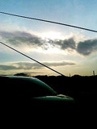

で、こっから先はシンセサイザーの話。興味無い人は飛ばしましょう。
 ヤフオクで\7000で落札したKORGのDW8000ってシンセが届きました。ってゆーかデカイ・・・（自分の想像のサイズの1.5倍くらい）、持ち歩くのはちょっと厳しいかも。
ヤフオクで\7000で落札したKORGのDW8000ってシンセが届きました。ってゆーかデカイ・・・（自分の想像のサイズの1.5倍くらい）、持ち歩くのはちょっと厳しいかも。1985年くらいにKORGから出てた8音ポリのシンセで、音源部分はデジタル（DWGSっていう音の元になる波形を選んで加工してく感じ）なんですけど、VCF(Volume Control Filter)とVCA(Volume Control Amplifer)はアナログみたいです、パラメーター呼び出し式がちょっと面倒だけど。詳しくはKORGのサイトにも載ってます
一応レゾナンスを上げるとVCF発振します。VCFの反転とか使うとREI HARAKAMIみたいな音つくれるかも。ディレイも付いてるし・・・えーとディレイの音に対しては、VCF効かないのね・・・まぁ、結構遊べるかもしんないです。
えーと、タイトルの2個目のシンセってのは、今まで使ってたYAMAHAのCS-5ってシンセ。これは前から持ってたんですけど、LFOの選択をサイン波にしてしばらく高速回転させてると、勝手に収束していってそのまま発振しなる状況でした。（「ヒヨヒヨヒヨ〜」って音がだんだん「ピー」って音になっちゃう）分解してあちこちいじってみると、どーもM51620Pって書いてあるICがアヤシイなぁと思われて。
んでとりあえずGoogleで検索かける訳です。見事に情報ひっかったのが、いつも見ているサイト（E-Labです、最初Hawkwindの情報の為に見ていたのですが、このサイトのおかげでアナログシンセが気になるようになりました）だったってのも何だか・・・有益な情報ありがとうございます。この情報無かったらYAMAHAにIC注文する、なんて思いつかなかったと。
そんな訳で、最近よーやくそのICが届いて半田吸取り線も買ってきて、本日よーやくICの差し替えを行いました。とりあえずテストしてみよう・・・電源が入らない・・・・慌てて再分解、ヒューズが切れてるだけでした。
んで、近所の電気屋でヒューズ（0.5A)を買ってきて、今度こそ。
♪Hal-Cali
-2004.1.29 バファリンと胃腸薬と風邪薬

#三種混合で。右の写真は「府中街道、多摩川渡る手前、いつも渋滞」です。えーと更新が滞ってたのは、風邪だかなんだかわかんないけど腹痛と頭痛と気持ちワルーで、何もする気が起きなかった為です。
思いっきり乗り遅れてはいますが、ムネカタさんご結婚おめでとうございます。
で、先週のこと。木曜日にはASTURIASのライヴを見に江古田へ（→レポ）このASTURIASってバンド、高校くらいの音楽聴きはじめる頃（≒プログレ聴き始める頃）に良く聴いてたバンドで。でも80年代に3回ライヴをやってからライヴはしてないと聞いていて（リーダーの大山氏はシンセマニュピレートでお仕事されてたのですが）もう見る機会は無いだろうと思ってたのですが・・・ずーっと好きだった曲が生で聴ける日が来て素直に嬉しいです。
あと、土曜日。例のバンドの練習でした、やっぱり機材が重いので（YAMAHA/CS-5 + Behringerのミキサー + CD-J、テルミン忘れた）友達の車で立川へ。こーゆー事やりだすと機材が気になってしょうがなくって、最近ヤフオクをよくチェックしてます。RolandのSH-7欲しいなぁ〜とか、見た目だけで欲しいよ。
とりあえず、あと欲しいモノとしては。Sherman Filterもイイなぁとかdopferにも惹かれつつ、現実問題としてボリュームペダルとかディレイとかチマチマしたものが必要な気もしてきてます。
夜は吉祥寺のシルエレへ行ってminoke?さんのライヴを見てきました（→レポ）
で、ここ数日に買ったCD
 #最近会社でも家でも眠くて眠くてしょーがないんです、ビョーキみたいな感じで。
#最近会社でも家でも眠くて眠くてしょーがないんです、ビョーキみたいな感じで。 #てなわけで、昨日の夜はsatomilkさんのお誘いでflying circusというイベントで開場時とバンドの入れ替え時にDJやらせていただきました。
#てなわけで、昨日の夜はsatomilkさんのお誘いでflying circusというイベントで開場時とバンドの入れ替え時にDJやらせていただきました。